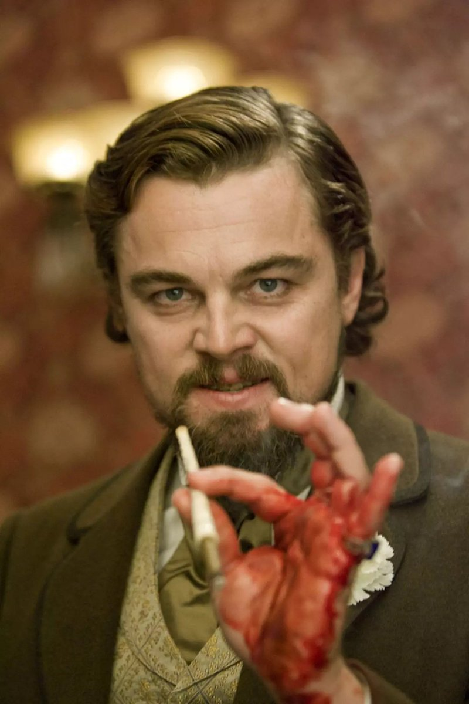
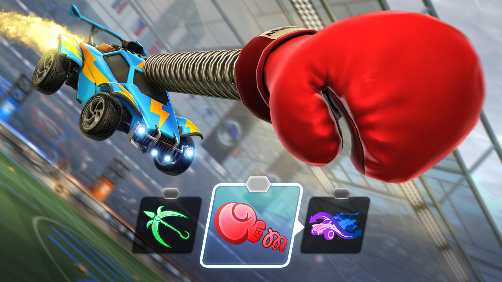

Accueil
Accueil
Explorer
Notifications
Messages
Signets
Listes
Profil
Plus
ArgelliKa 🤡
@ArgelliKa
Johannes Herrmann (Phylloscopus)
@Taigasangare
7 min
Twitter est en train de réinventer, mais pièce par pièce, les obsèques de l'abbé Quille, c'est émouvant.
2
10
21
Netflix France
@NetflixFR
32 min
Leonardo DiCaprio s’est vraiment ouvert la paume de la main dans Django Unchained. Et Tarantino a continué à filmer. Voilà pour l’anecdote.
Le film est toujours dispo.

91
1 k
11,2 k
Rocket League
@RocketLeague
2 juin
Time to get ✨TACTICAL✨
Rocket League's newest LTM, Tactical Rumble, starts tomorrow!
Here's everything you need to know:
https://epic.gm/TacticalRumble

103
320
4 k